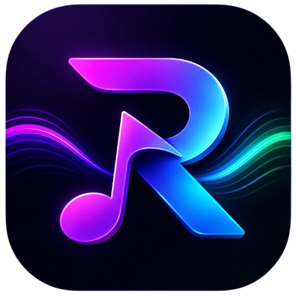

Aurora feed
Personalized rows, genre picks, daily mix, and quick access to playlists, favorites, history, and library.
Windows 10/11 · .NET 8 · Dark glass UI
Rezinas Music is a desktop player built for long sessions: Aurora home feed, personal radio, full library management, synced lyrics, and a bottom player bar that stays out of your way.
Checking for updates…

Dark glass panels, soft violet accents, and a layout inspired by modern streaming apps — but fully local and under your control.

Navigation is simple: top bar for pages, bottom bar for playback, side panel for queue and context.
Personalized rows, genre picks, daily mix, and quick access to playlists, favorites, history, and library.
Russian hits, international chart, genre stations, and a «For you» mix from your taste — refreshed every day.
Search Deezer, YouTube, SoundCloud, and your local library. Filter by tracks, albums, artists, or podcasts.
Import folders from PC, filter by artist, smart playlists («never played», «from 2024»), and full track list.
Create playlists, mosaic covers, drag-and-drop queue order, shuffle, and export/import as JSON.
Hero cover, synced lyrics panel, track list with play/shuffle/like — album page like a mini streaming app.
Queue with drag-and-drop, artist bio, credits, Spotify links, and full-screen lyrics overlay.
Dark theme, language, equalizer, crossfade, hotkeys, Discord status, Spotify sync, backup ZIP, and stats.
Built for people who listen for hours — not just press play once.
Personal radio and home mixes update once per calendar day — new picks without manual refresh.
LRC timing from LRCLIB, full-screen overlay, album-side panel, and offset tuning in Settings.
Log in with Spotify, import playlists and liked songs, optional auto-sync on a schedule.
Show what you listen to in Discord with cover art and app logo — toggle in Settings.
Reorder Up Next with drag-and-drop, repeat modes, shuffle, gapless-style crossfade between tracks.
Playlists and settings in local SQLite. Export JSON/ZIP backup. No analytics server.
Keyboard shortcuts, system media keys, mini player, and background playback from the tray.
English, Russian, Ukrainian, Spanish, German, French, Italian, Portuguese, Polish, Japanese.
Week / month / year play counts, top artist, and top track — right in Settings.
RezinasMusic-Setup-x.x.x.exe from GitHub Releases.%LOCALAPPDATA%\RezinasMusic\ on your PC only.Requires Windows 10/11 x64. No .NET install needed — the app is self-contained.
This block syncs automatically from GitHub Releases — publish a new tag and the site updates.
Rezinas Music is free and ad-free. If it helps your daily listening, you can support development.